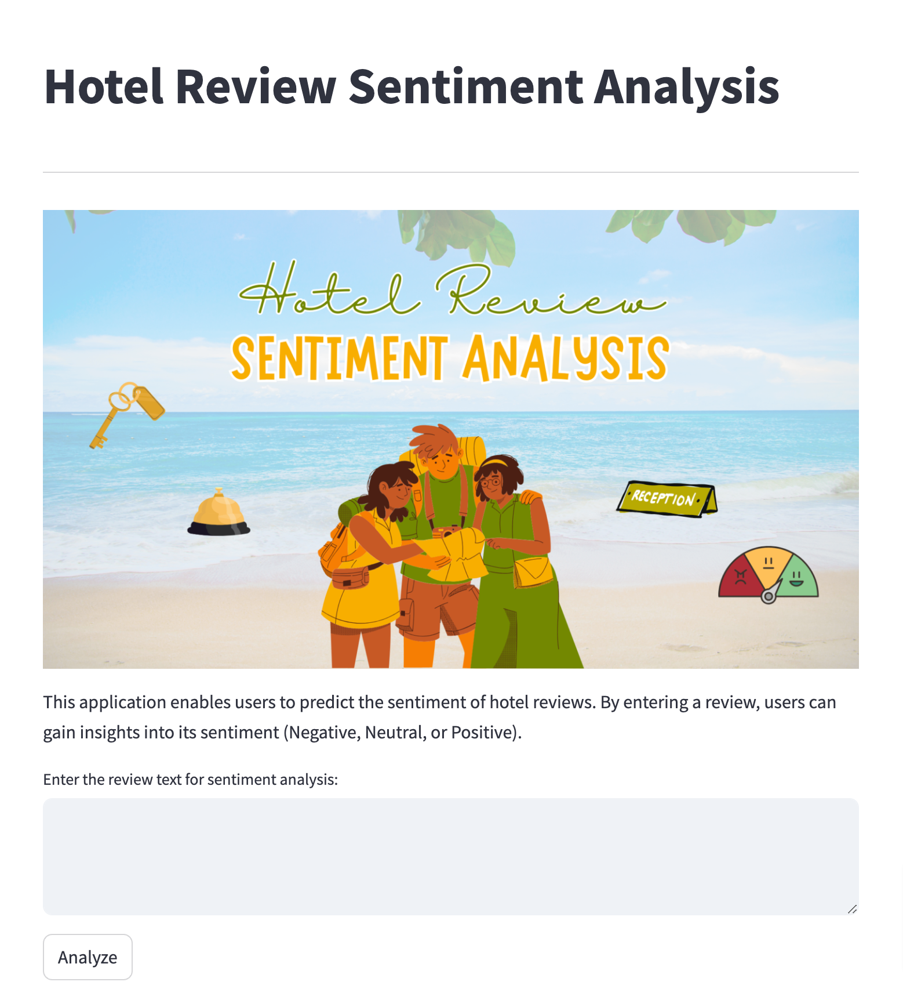

Introduction
Customer reviews are a key factor in the hospitality industry, influencing potential guests' decisions and shaping the reputation of hotels. This project aims to develop a deep learning model to classify hotel reviews based on sentiment, categorizing them into negative, neutral, or positive feedback. By analyzing these reviews, hotel managers can gain valuable insights into guest satisfaction and improve customer service.
Dataset Overview
The dataset for this project is sourced from TripAdvisor, a platform where travelers share their experiences. It consists of two main features:
- Review: The text of the customer's feedback.
- Rating: A numerical rating from 1 to 5 indicating customer satisfaction.
The ratings are divided into three sentiment categories:
- Negative (1-2)
- Neutral (3)
- Positive (4-5)
Dataset URL: TripAdvisor Hotel Reviews
Methodology
Data Loading and Inspection
Loading and inspecting the dataset to ensure data quality and completeness.
Exploratory Data Analysis (EDA)
Exploring patterns and trends; distribution of ratings and sentiment breakdown.
Feature Engineering
Prepare the review text; text preprocessing including tokenization, stopword removal, and lemmatization.
Model Training
Training a sentiment analysis model using ANN and enhancing it through transfer learning and hyperparameter tuning.
Model Evaluation
Evaluating model performance using metrics such as accuracy, F1-score, and loss functions.
Model Optimization
Refining the model through adjustments in the architecture, hyperparameters, and training process.
Models Employed
Artificial Neural Networks (ANN)
ANN is employed as the primary model for sentiment classification, using layers to learn complex patterns in the review text.
Transfer Learning
Leveraging pre-trained models for better feature extraction and faster training.
Model Analysis
Strengths
The model demonstrated high accuracy (92.69%) and consistent training/validation loss reduction, suggesting a well-learned model.
Weaknesses
The model struggles with neutral reviews, reflected by lower F1-scores for neutral sentiment classification.
Improvements
Adding more training data, fine-tuning hyperparameters, and addressing class imbalance could further improve model performance.
Conclusion
The sentiment analysis model successfully categorizes hotel reviews into negative, neutral, and positive sentiments, providing actionable insights for hotel management. Despite the high accuracy, addressing challenges with neutral sentiment classification and overfitting would improve overall performance.
Model Deployment
The model is deployed on Hugging Face, allowing hotel managers to analyze customer feedback in real-time and make data-driven decisions to improve service quality.
Explore the deployed model: Hotel Review Sentiment Analysis on Hugging Face
Libraries and Tools


GitHub Repository
Access the project’s code and further documentation on GitHub: Hotel Review Sentiment Analysis GitHub